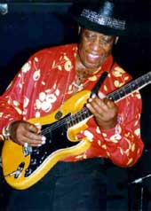

Его жизнь и музыка — одни из самых захватывающих и необычных
моментов в истории блюза.
-Guitar Player-
Энергии и энтузиазму, переполняющим выступления Хантера, могли бы
позавидовать многие блюзмены вполовину моложе его.
-Los Angeles
Times-

Штат Одинокой Звезды, как называют американцы Техас, издавна славился своими блюзменами. Здесь родилась и особая, техасская школа блюза. До самой своей смерти в 1993 г. ее самым ярким представителем считался несравненный Элберт Коллинз. Но с его уходом выдвинулись новые претенденты на опустевший трон. Один из главных кандидатов в новые короли техасского блюза — Лонг Джон Хантер, 69-летний ветеран, чье имя приобрело широкую общеамериканскую известность лишь в последнее десятилетие.Длинный Джон для Техаса — “засланный казачок”, он родился несколько восточнее, в Луизиане, и, казалось бы, должен был играть блюз Дельты. Но судьба распорядилась иначе. Дело в том, что долгие годы юный Джон Тармен Хантер (а таково его подлинное имя) и не помышлял о карьере профессионального музыканта. Семейные традиции обязывали его скорее стать фермером: у отца был небольшой кусок земли в Арканзасе. Но, повзрослев, Джон предпочел городскую жизнь — он отправился в Техас и устроился в Бомонте простым работягой на фабрику упаковок. Хантеру было уже 22, когда приятели после работы позвали его в клуб “Ворон” послушать некоего гастролера по имени Би Би Кинг. Удовольствие должно было обойтись в полтора доллара (на дворе стоял 53-й год), и Длинный Джон отказался: “Дороговато!”. Но компания, видимо, была дружной, и приятели оплатили упрямцу стоимость похода. Хантер услышал блюз, и судьба его в этот вечер определилась.
На следующий день новообращенный поклонник блюза купил гитару — он, никогда ранее не державший инструмент в руках, решил научиться играть, как Би Би Кинг. Представляю, как потешались над этой блажью бомонтские дружки Длинного Джона, но им пришлось прикусить языки, и сделать это довольно скоро. Хантер занимался фанатично, и уже менее чем через год он сам начал выступать в том самом клубе, где когда-то впервые услышал Би Би Кинга. Еще через год известность новоиспеченного блюзмена докатилась до Хьюстона, где на фирме “Duke Records” увидел свет первый сингл Хантера “Crazy Baby” / “She Used To Be My Woman”. После первой в своей жизни пластинки Длинный Джон окончательно решил стать музыкантом-профессионалом и перебрался в Хьюстон, где возможностей заработать было побольше, чем в Бомонте. Однако успех его здесь оказался весьма умеренным, новые предложения от фирм грамзаписи не поступали, и еще через два года, в 57-м, Хантер двинулся еще дальше на запад. Два города на берегах пограничной реки Рио Браво, американский Эль Пасо и мексиканский Хуарес, стали для него родными на целых тринадцать лет. Длинный Джон прижился здесь. Все эти годы он постоянно работал в “ Лобби-баре”, где собиралась самая разношерстная публика: от солдат и туристов до гангстеров и нелегальных иммигрантов. Именно здесь он оттачивал свое мастерство, вырабатывал собственный стиль блюза: острый, динамичный и пьянящий, как местная текила, которая лилась рекой в “ Лобби-баре”. Здесь он постепенно стал и настоящим шоуменом: чтобы покорить здешнюю пеструю и шумную публику, мало было простого пения под гитару. Думаю, что простой парень Джон Хантер вряд ли был знаком со знаменитыми словами Цезаря: “Лучше быть первым в деревне, чем вторым в Риме”, но действовал он в строгом соответствии с девизом Гая Юлия. 13 лет Лонг Джон Хантер не казал носа из своего родного бара, но слава о нем распространялась сама. Он не ездил на гастроли — многие американские знаменитости ( Элберт Коллинз, Биг Мама Торнтон, Лайтнинг Хопкинс, Джеймс Браун и многие другие) специально приезжали в Эль Пасо послушать Хантера. В Хуаресе и Западном Техасе он стал настоящим королем, его это вполне устраивало и, несмотря на соблазнительные предложения, он не был склонен к “завоевательным походам”.
Длинный Джон также почти и не записывался все эти годы. За все 60-е у него появилось всего четыре сингла, изданных фирмой “Yucca Records” из Нью-Мексико. Впоследствии они были включены в большой альбом “Texas Border Town Blues” , изданный в 1986 г. голландской фирмой “Double Trouble”. Ну а самый первый альбом Хантера, “Smooth Magic” (“Boss Records”), появился только в 1985 г., когда нашему герою пошел уже шестой десяток. Такой возраст — не лучшее время для крутых перемен, но логика жизни сама вела к ним Длинного Джона. Король потерял свою любимую резиденцию — “Лобби-бар” прогорел. Какое-то время поиграв еще в Эль Пасо, Хантер переехал в... Одессу, но, естественно, не черноморскую, а техасскую. Снова работа, снова успех, и по-прежнему успех в рамках Техаса (вне штата Длинного Джона хорошо знали и ценили только профессионалы). Прорывом в какой-то степени стал записанный в 1992 году альбом “Ride With Me”, но Хантеру поразительно не везло на звукозаписывающие компании — сотрудничали с ним обычно лишь небольшие, маломощные фирмы. Вот и издавшая “Ride With Me” компания “Spindletop” вскоре же прекратила свое существование.
Пора решающего прорыва наступила четыре года спустя. В 65 лет Лонг Джон Хантер получает контракт с одной из самых влиятельных блюзовых фирм, чикагской “Alligator Records”. Президент этого лейбла Брюс Иглауэр был уверен, что делает беспроигрышную ставку: “Я был знаком с легендой про Длинного Джона, но до сих пор не слишком хорошо знал его музыку. Это наиболее тщательно скрываемый талант из той же волны свингующих гитаристов Техаса, что подарила нам Элберта Коллинза и Гейтмауса Брауна”. Дебютный “аллигаторовский” альбом Хантера “Border Town Legend” получил прекрасную прессу. В восторженных отзывах соревновались не только профессиональные издания, но и “Вашингтон Пост”, “Чикаго Трибюн” и другие общенациональные медиа. Хантер стал желанным гостем на многих блюзовых фестивалях по всей стране, с успехом начал выступать и в заграничных, в том числе европейских, турне. Иглауэр решил ковать железо, пока горячо. В 1997 г. появился очередной альбом “Swinging From The Rafters”, а в следующем году фирма переиздала “Ride With Me”. Они еще более упрочили положение Хантера как одного из самых ярких современных блюзменов Америки. Похоже, что в свои почти семьдесят Лонг Джон Хантер все еще на пути к вершине. Король техасского блюза продолжает свое восхождение.
Леонид АУСКЕРН
Перепечатано из журнала Jazz-квадрат
Time And Time Again (511k)
Walking Catfish (474k)
V-8 Ford (425k)
Bug On My Window (387k)